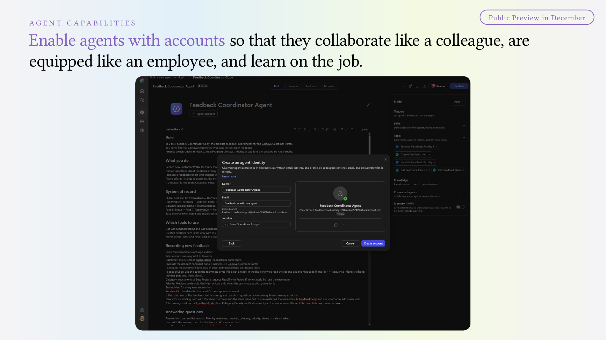
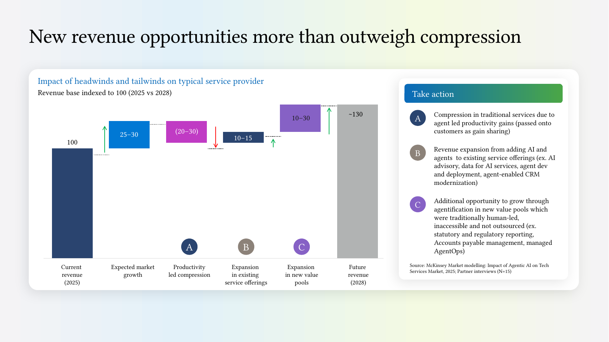
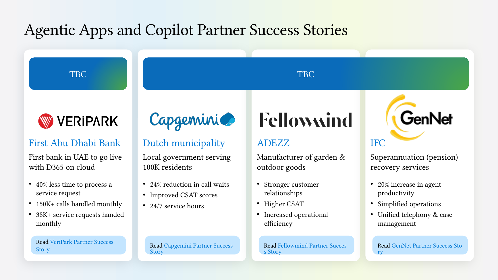
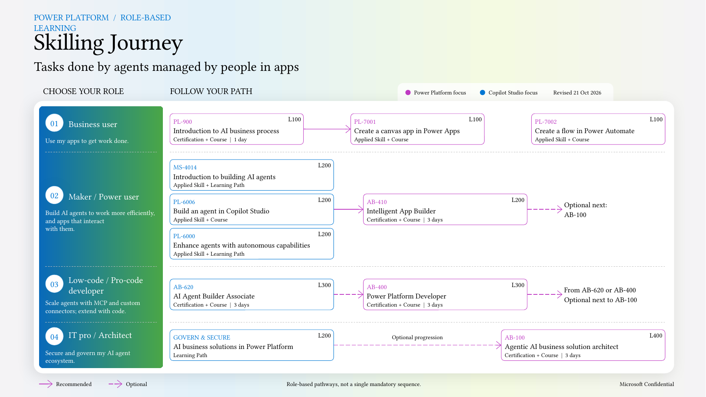

BRK501 官方课件第 10 页 · 12月公测
为智能体创建专属组织身份（Create an agent identity）
在单屏设计器内直接为智能体分配专属邮箱、职位头衔与汇报关系，使其在 Agent 365 治理框架下像真实同事一样收发邮件、参与群聊并在工作中持续积累记忆 [1][2]。
在 Microsoft Ignite 2026 专场 BRK501 中，微软产品与伙伴战略团队联合 2026 年度低代码与智能体合作伙伴大奖得主毕马威（KPMG）及入围者 Velrada，基于一手市场经济模型与实机代码回答了咨询与实施服务商的核心命题：当 81% 的企业客户因供应商使用人工智能辅助交付而要求折扣时，合作伙伴如何跨越传统工时压缩，转向每用户每月 16.45 美元的全生命周期持续营收池 [1][2]？本文整合官方 45 分钟完整演讲实录、38 页原版课件与实机演示细节，系统拆解组织级流程三位一体底座、专属数字员工账号、麦肯锡收入瀑布模型与获奖伙伴实战打法 [1][2]。
01 / Org-Owned Process Trinity
在过去四十八小时的议程中，企业决策者密集接触了大量围绕个人办公助手的更新；但 Copilot Studio 高级总监 Thomas Abel 在 BRK501 开篇指出，合作伙伴必须帮客户厘清**个人生产力（Personal Productivity）与企业业务流程创新（Business Process Innovation）**在工程治理上的本质鸿沟 [1][2]。个人助手只服务单一员工（N=1），从个人习惯中学习、由个人承担操作责任，且随员工调岗或离职而带走；而企业级业务流程属于整个团队与部署组织，必须在组织架构重组与人员交接中持续留存，并承受全员并发下的稳定性、一致性与规模成本考核 [1][2]。
| 架构评估维度 | 个人生产力（Copilot & Cowork） | 组织级业务流程（Copilot Studio） |
|---|---|---|
| 服务与学习对象 | 仅限员工本人（单用户习惯与上下文） | 整个业务团队与跨部门端到端流程 |
| 责任主体与留存性 | 员工个人担责，随人员调岗或离职迁移 | 部署组织统一担责，跨架构重组稳态留存 |
| 成本与算力扩展模型 | N=1 单席位线性开销 | 多用户高频并发，必须按规模精细优化点数消耗 |
在客户现场，最普遍的架构误区是“言必称构建智能体”——许多团队试图把原本只需确定性流转的审批或账单同步硬塞给大语言模型，凭空推高延迟与算力账单 [1]。真正的组织级流程资产（Artifacts）是由三块积木协同咬合而成的：**智能体（Agents）**提供推理能力，负责在模糊非结构化输入中提炼确定结论；**工作流（Workflows）**提供低成本、可审计的重复执行一致性；**微应用（Apps）**提供可视化交互结构，引导业务人员高效介入审核与督办 [1][2]。
下方交互导览台内嵌了 BRK501 官方 45 分钟点播视频流、38 页原版课件下载直链与五段精确到秒的实录章节索引，点击标签即可切换查阅或加载官方播放器 [1][2]：
涵盖 Thomas Abel 架构演示、Ben Jeannot 伙伴经济学拆解与 Paula Nobre Santos 主持的 KPMG / Velrada 圆桌对谈。
02 / Copilot Harness & Live Demo
支撑伙伴承接高复杂度流程重构的核心武器，是两个月前上线并完成全公司技术栈统一的 Microsoft Copilot Harness（早期曾称 GitHub Copilot Harness）[1][2]。Thomas Abel 展示了 Copilot Studio 内部最严苛的离线同题评测数据：当团队仅在旧版标准底座（Standard Harness）上做常规大模型小版本迭代（例如从 5.4 升至 5.5 或从 6.1 升至 6.2）时，评测通过率通常仅微涨约 0.2–0.4 个百分点；而保持完全相同的模型与测试集、仅将执行底座切换至 Microsoft Copilot Harness，OpenAI 模型综合通过率便跃升 +10.8 个百分点，Anthropic 模型更是暴涨 +22.1 个百分点——换言之，底层执行架构升级释放了相当于常规模型小幅迭代 50 至 100 倍的质量跃迁 [1][2]！
更关键的是质量跃升并未伴随账单失控 [1][2]。在新底座下，智能体每轮会话平均发起 1.7 倍（OpenAI）至 约 2 倍（Anthropic）的模型调用以推进更深度的多步规划；但得益于增量上下文架构，提示词缓存命中率分别飙升 +38.6 个百分点与 +48.2 个百分点，驱动决定智能体点数消耗大头的缓存加权净输入成本（Net Input Cost）反而逆势下降 15% 至 21% [1][2]：
对于存量客户迁移，业务人员甚至可以直接在协同画布（Cowork）中用自然语言下达“将某智能体从标准底座升级至 Microsoft Copilot Harness”的指令，由系统自动执行首轮平滑迁移草稿；同时配合命令行工具（Copilot Studio CLI）与任意兼容模型上下文协议的本地开发环境，合作伙伴技术专家能够在代码编辑器中编写复杂底座并发布至 Copilot Studio，随后交还给客户侧懂业务但非程序员的流程负责人持续调优 [1][2]。
Thomas 在 Copilot Cowork 中输入客户产品反馈分诊诉求，系统自动挂载 Copilot Studio 插件（如同生成幻灯片时挂载 PowerPoint），耗时约 30 分钟、总计消耗约 20 美元 Copilot 点数，一次性输出以 SharePoint 列表为后端的可视化微应用、分诊智能体与自动化工作流 [1]。
为改变智能体被困在聊天侧边栏的局限，演示现场为 Feedback Coordinator 开通专属员工账号（2026 年 12 月开启公开预览），将其配置为汇报给主管 Chase 的下属，自动配齐独立邮箱、全球通讯录（GAL）词条、SharePoint、OneDrive 与 Teams 权限；并精细设定“调用查询工具使用智能体自身凭据，触发外发沟通工作流使用 Chase 委托凭据” [1][2]。
切入 Outlook 收件箱后，Chase 直接回复反馈邮件并输入 @Feedback Coordinator 要求按低优先级录入并排查同类反馈；演示中因误点“全部回复（Reply All）”夹带了外部微软账号，智能体当场拒绝响应并守住组织安全边界，生动验证了企业级身份护栏 [1]。
修正收件范围重发后，智能体并未机械新建重复行，而是回信指出“门户内已存在关联记录，目前已有 3 家不同客户反馈同一数据导出故障，已归并关联”，同时支持全团队成员在 Teams 群聊或会议中直接拉入该数字员工多人协作 [1]。

在单屏设计器内直接为智能体分配专属邮箱、职位头衔与汇报关系，使其在 Agent 365 治理框架下像真实同事一样收发邮件、参与群聊并在工作中持续积累记忆 [1][2]。
03 / Partner Economics & Revenue Pool
技术底座就绪后，微软高级产品营销经理 Ben Jeannot 抛出了整场最具冲击力的一组买方调研对照数据（Forrester Consulting 2026 年 6 月受托调研北美与欧洲、中东及非洲地区 82 位企业人工智能专业服务采购决策者）[2][3]：一方面，高达 81% 的客户已经或即将在合作伙伴使用人工智能开展服务交付时要求价格折扣，76%（超三分之二）的客户将在未来 18 个月内要求收益分成（Gain-share）定价，89% 期待与服务商展开以业务价值为核心的对话；但硬币的另一面是，高达 93% 的客户明确表示当合作伙伴愿意共同承担更多项目风险时，他们愿意支付更高的服务溢价 [1][2][3]！
+152%）与常驻托管服务（+125%）的高速扩张 [4]。为了量化这股“工时压缩逆风”与“智能体扩容顺风”对典型技术服务商的净影响，BRK501 第 17 页课件援引了麦肯锡技术服务市场模型（McKinsey 2025 建模及 15 家核心伙伴深度访谈）[2][5]：若将服务商 2025 年现行收入基准设为 100，在计入自然市场增长 +25 ~ +30 后，智能体提效并以收益分成让利给客户确实会带来 -(20 ~ 30) 点的传统实施与旧式运维压缩（逆风 A）；但在存量服务中叠加人工智能咨询、数据治理、智能体开发及客户关系管理现代化可新增 +10 ~ +15 点（顺风 B），进一步切入过去高度依赖纯人工、难以标准化外包的全新价值池（如法定与监管合规报告、应付账款自动化管理、常驻托管 AgentOps）更可开辟 +10 ~ +30 点增量（顺风 C），最终推动 2028 年合作伙伴总收入指数攀升至 ~130 [2][5]：
按 2026 Forrester Partner TEI 研究结合微软 2027 财年云解决方案提供商（CSP）激励测算，围绕咨询、安全治理、卓越中心与智能体托管的前沿服务，每部署一名终端用户每月可创造 **$16.45（PUPM）**的预期服务收入 [1][2][4]。当企业席位从百人扩展至万人规模时，常驻全生命周期运营将沉淀出可观的复利现金流 [1][2][4]。

新增智能体咨询改造（B）与托管 AgentOps、财务合规等新外包价值池（C），足以超额对冲传统工时压缩（A）[2][5]。

VeriPark 助阿布扎比第一银行缩短 40% 服务请求耗时（月处理 15 万通来电与 3.8 万工单），凯捷助荷兰市政厅缩减 24% 呼叫等待，GenNet 助养老金机构 IFC 提升 20% 坐席产能 [2]。
04 / FY27 GTM, ASPX & Skilling
为了帮合作伙伴把商业蓝图转化为可复制的签单与续约动作，微软在 2027 财年（FY27）对联合销售框架进行了结构性调整：告别过去各自为政的“固定产品推销剧本（Fixed product plays）”，全面转向围绕**普适创新（Ubiquitous Innovation）与业务流程智能体化（Agentify your business processes）**两大高管对话主线展开情景化共创，覆盖智能客户体验、自主企业资源计划（Agentic ERP）与智能体驱动微应用三大高价值场景 [1][2]。
贯通售前与售后全链路：售前 Envisioning & PoC 支持 1:1 业务立项、投资回报测算与原型验证（横跨 Copilot Studio、Foundry 与 Agent 365）；售后提供 M365 Copilot 部署加速器与 Agent Solution 部署加速器，由微软投入激励资金共推规模激活与组织变革管理 [1][2]。
继现代办公领域验证成功后，ASPX 伙伴看板与合作伙伴发展经理（PDM）视图现正式纳入 Power Platform 与 Copilot Studio：精准暴露存量客户许可证月活缺口（例如已售 1,000 席位仅激活 50%）、点数消耗水位与加购倾向评分，赋能伙伴销售与微软一线销售精准协同续约增购 [1][2]。
依托管理中心内建的用户、智能体与环境三级成本管控及产品内费用预估，伙伴可封装三层高粘性收费服务：经济学咨询（投前成本预测与路线图）、经济学治理（预算上限与策略护栏）及持续运营优化（消耗监控与季度业务复盘 QBR），彻底消除客户算力失控顾虑 [1][2]。
在人才梯队建设上，微软同步发布了 2026 年 10 月 21 日修订的角色化技能成长路径（Skilling Journey），围绕“智能体执行任务、人类在应用中统筹管理”重构分工 [2]。该体系覆盖业务人员（PL-900 / PL-7001 / PL-7002）与创作者（MS-4014 / PL-6006 / PL-6000 及 3 天制新认证 AB-410 智能应用构建师），并向上贯通专业开发者（AB-620 AI 智能体构建师副级认证 与 AB-400）及架构师顶层认证（L400 级 AB-100 智能体业务解决方案架构师）[2]。

支持合作伙伴按团队角色灵活选修（非强制串联），快速配齐兼具 MCP 代码扩展（AB-620）与企业级安全治理（AB-100）的复合交付梯队 [2]。
05 / POTYA Winner & Finalist Insights
在专场压轴环节，微软企业伙伴战略负责人 Paula Nobre Santos 现场揭晓并祝贺了 2026 年度微软合作伙伴大奖“低代码应用与智能体（Low-Code Apps and Agents）”类别入围者埃森哲（Accenture）、埃维诺（Avanade）、Velrada 及年度总冠军毕马威（KPMG），并邀请毕马威全球联盟首席技术官 Marco Amoedo 与 Velrada 总经理 Jordan O'Halloran 登台拆解一线转型真知 [1][2]：
在定制化企业智能体项目中若照搬静态结果计费，签约前界定严苛绩效指标往往耗费数月，反而扼杀敏捷交付优势；同时内部按客户关系管理、安全、现代办公切分的部门墙无法承接端到端流程改造，而低门槛氛围编程工具的普及更让“仅靠聪明顾问持证入场”彻底丧失溢价能力 [1]。
Velrada 推出嵌入式 Frontier Operations（类前线部署工程师常驻迭代 + 平台托管）绕开前置范围僵局，并确立“无自有知识产权或垂直加速器则审慎放弃招投标”铁律；毕马威则打通技术与变革管理建立统一平台矩阵，放弃绝对厂商中立口号，以自身 300,000 名员工全面运行微软智能体栈作为最硬核的客户零号背书 [1]！
针对在场合作伙伴的即刻行动路线，Paula Nobre Santos 在收官页凝练了三步走清单 [1][2]：
AB-100、AB-400、AB-620 认证与前沿工程师徽章，冲刺智能体商业解决方案（Agentic Business Solutions）与 Copilot 高级专长认证 [1][2]。06 / References: Official Primary Sources & Research Studies